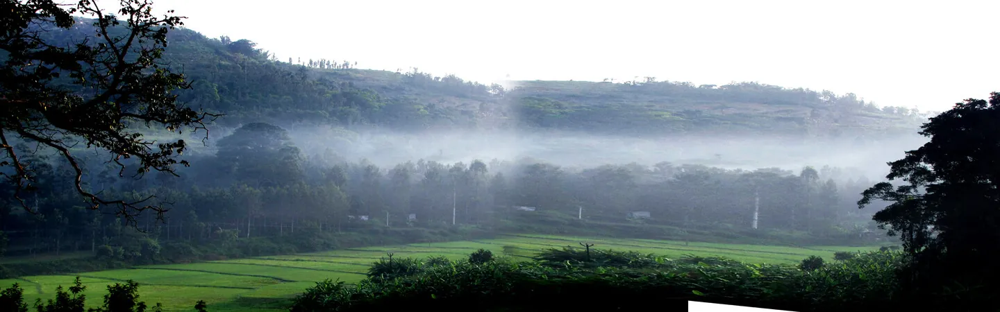

Principles
What every screen of Namakkal 360 follows.
DOSimple first: one clear thing per row - area, then type & date, then news.
DON'TCrowd the page with tickers, side panels and counters.
DOBright, colourful brand: logo colours in smoke, colour-coded news types.
DON'TUse colour as decoration only - every colour means a news type or an alert.
DOStory pictures come from each news story; place photos only in the area banner.
DON'TShow a place photo as if it were the news picture.
DOTamil first, English one tap away (த / EN) - same layout in both.
DON'TMix languages in one label.
DOUse only a plain hyphen "-" everywhere (also in news text from the pipeline: long dashes are changed to "-" before showing).
DON'TUse long dashes anywhere on the site.
Colour
Brand colours come from the logo; news-type colours make each kind of news easy to spot.
Brand
Brand green#0B5D3B
Fresh green#16A34A
Sun yellow#FACC15
360 orange#F97316
360 red#EF4444
Sky blue#0EA5E9
Brand gradient--grad
News types
மின்தடை · Power cut--t-power
அரசு · Govt notice--t-collector
விபத்து · Accident--t-accident
குற்றம் · Crime--t-crime
மழை · Rain--t-rain
மக்கள் பிரச்னை · Civic--t-civic
கல்வி · Education--t-edu
நிகழ்ச்சி · Events--t-event
Surfaces (switch 🌙 to see dark)
Page--bg
Surface--surface
Glass--glass
Soft--soft
Text--text
Muted text--muted
Typography
Anek Tamil for Tamil, Plus Jakarta Sans for English - one family feel, built for Tamil letters.
Banner · 36/800நாமக்கல் மாவட்டம்
Story title · 24/800மரவள்ளி விவசாயிகள் பிரச்னை: 30-ல் கூட்டம்
Section · 20/800சமீபத்திய செய்திகள்
Card title · 16.5/700Worker killed after private bus hits him near Velagoundampatti
Body · 17/400நாமக்கல் மாவட்டத்தில் 90,703 குழந்தைகளுக்கு வைட்டமின் ஏ திரவம் வழங்கப்பட உள்ளது.
Meta · 12.5/600இன்று · 06:25 · வேலகவுண்டம்பட்டி
Shape & space
Rounded, soft shapes; 8-point spacing.
Radius
7 · tag
12 · button
18 · card
22 · panel
pill · chip
Spacing scale
8 · 12 · 16 · 20 · 24 · 32 · 40 px - page side gutter 16 px; card gap 16 px (12 px on phone)
Smoke background
Slow-drifting smoke in logo colours (green, yellow, sky, orange, pink) + fine grain. Never behind text directly - text sits on glass.
Glass card on smoke
background: var(--glass) + backdrop blur 14px
Header & switches
Sticky glass header with the brand gradient line; search opens on tap.
 நாமக்கல் 360
நாமக்கல் 360
Search field
Chips & filters
Area first, then towns, then type + date in one compact row. Selected = gradient fill.
Area (taluk)
Town (inside a taluk)
News type (each in its colour) + date
Area banner
The only place where place photos are used. Changes with the chosen taluk; credit shown bottom-right; “☆ my area” on the right.

கொல்லிமலை
செம்மேடு · வளப்பூர் நாடு
Power-cut alert
Always pinned above the news for today/tomorrow. The bar shows the cut hours on a 6 AM - 10 PM line.
மின்தடை அறிவிப்பு · காளப்பநாயக்கன்பட்டி · இன்று · 02:14காலை 9 முதல் மதியம் 2 வரை மின் தடை
News cards
Top colour line + label = news type. Picture = the story's own image (placeholder shown when none). On phones the card turns into a row.
விபத்து· வேலகவுண்டம்பட்டி
தனியார் பேருந்து மோதி தொழிலாளி உயிரிழப்பு
அரசு அறிவிப்பு· நாமக்கல்
மரவள்ளி விவசாயிகள் பிரச்னை: 30-ல் முத்தரப்பு கூட்டம்
மழை· ஓலப்பாளையம்
30 ஏக்கர் பயிர் நீரில் மூழ்கி நாசம்
Story view
Slides in from the right (full screen on phones): picture, title, full story, “முழு விவரம்” facts, share + reel buttons.
அரசு அறிவிப்பு· நாமக்கல் · இன்று · 10:14
மரவள்ளி விவசாயிகள் பிரச்னை: 30-ல் முத்தரப்பு கூட்டம்
வரும் 30ம் தேதி மாலை 4:30 மணிக்கு நாமக்கல் கலெக்டர் அலுவலகத்தில் இக்கூட்டம் நடைபெற உள்ளது.
- இடம்
- நாமக்கல்
- நாள்
- அக்டோபர் 30, மாலை 4:30
- யார்
- ஆட்சியர் மதுபாலன்
States & feedback
Every tap answers: press shrink (scale .97), selected gradient, hover lift with the type colour glow.
Empty
இந்தத் தேர்வில் செய்தி இல்லை.
Chip states
Motion
Calm and purposeful. All motion is switched off when the phone asks for reduced motion.
- Cards fade up (16 px, 0.45 s) as they scroll into view; 6 more load automatically at the bottom.
- Smoke drifts over 38-60 s loops; banner photo stays still for reading.
- Story view slides in (0.28 s); back-to-top appears after 600 px of scrolling.
- Taps: press scale 0.97; hover lift 2 px.
Accessibility & reading
For every reader in Namakkal - older phones, bright sunlight, Tamil first.
- Body text 17 px with 1.8 line height for Tamil; tap targets at least 38 px.
- Colour is never the only signal: every type colour also has a written label.
- Works with keyboard (Enter opens a story, Esc closes); dark mode follows the phone setting.
- Place photos always show the photographer / source credit.